← Overall ranking · Lab gallery
F03 · Dashboard Overview — version ranking
Family task: Dashboard overview (/dashboard): a client landing here must grasp workspace status, see what needs their attention, and take the next action - complete the pending checkout (₹31,875.00), review expiring quotes, open unread messages - using verdict, vitals, pipeline, Awaiting you and the live workbench queues.
Baseline context: Frozen content per docs/BASELINE-MAP.md: H1 Overview, verdict figures (invoiced ₹81,500.00 / ₹31,875.00 pending), 4 vitals, labelled pipeline bars, Awaiting you, 4 count-bearing workbench tabs (Quotes 0 / Pay now 4 / Projects 0 / Inbox 2) with instructive empty states, recent activity. Demo affordances (sidebar routes, checkout) are documented lab demo behaviour per DECISIONS.md SS3 - scored on honest feedback, not real payment.
Leading version(s): V2 · Confidence: medium — Complete screenshot set (5 versions x desktop/tablet/mobile/dark/task/fullpage) + interaction/axe/keyboard runs under one pinned environment; gaps: single evaluator, tab arrow-key pattern and V5 sort not exercised, designed empty/loading/error states have no public trigger and were not observed, system-font fallback instead of Outfit.
Tie groups: none (all gaps > 2.0) · Production comparison: Comparison place #1 of 6 at 77.5. Lab-only winner remains V2.
Lab-only scores
| Rank | Version | Total /100 | Task clarity (w25) | Usability (w20) | Visual craft (w15) | Responsive (w15) | Accessibility (w15) | Integrity (w10) | Major+ issues |
|---|---|---|---|---|---|---|---|---|---|
| #1 | V2 · Verdict Hero | 73.8 | 4 /4 | 3 /4 | 3 /4 | 2 /4 | 2 /4 | 3 /4 | 2 |
| #2 | V3 · Awaiting-You Spine | 65.0 | 3 /4 | 3 /4 | 3 /4 | 2 /4 | 2 /4 | 2 /4 | 4 |
| #3 | V5 · Dense Ops Workbench | 58.8 | 3 /4 | 3 /4 | 3 /4 | 1 /4 | 2 /4 | 1 /4 | 3 |
| #4 | V4 · Health Bento | 56.2 | 3 /4 | 2 /4 | 2 /4 | 2 /4 | 2 /4 | 2 /4 | 4 |
| #5 | V1 · Calm Overview capped 49 | 49.0 | 3 /4 | 1 /4 | 2 /4 | 2 /4 | 2 /4 | 2 /4 | 3 |
Formula: total = Σ(weight × score ÷ 4). Dimension scores are integers 0–4 against fixed anchors (25 task clarity · 20 usability · 15 visual craft · 15 responsive · 15 accessibility · 10 integrity). Totals within 2.0 form a practical group; ties are ordered by task clarity, fewer major/critical issues, then responsive score; exact ties after these checks share rank (=).
Production page report and comparison rank
Comparison place #1 of 6 at 77.5. Lab-only winner remains V2.
Live production reference. Same rubric, separate from lab version records. Not a lab template and not an automatic winner. Route: /dashboard. Outcome: reviewed. Confidence: medium.
| Comparison place | Page | Total /100 | Task clarity | Usability | Visual craft | Responsive | Accessibility | Integrity | Major+ issues |
|---|---|---|---|---|---|---|---|---|---|
| #1 | Production · /dashboard | 77.5 | 4 /4 | 3 /4 | 3 /4 | 3 /4 | 2 /4 | 3 /4 | 1 |
Account A showed heading Overview, with Workspace vitals, Awaiting you, Live workbench, Quotes to review, and Recent activity. Awaiting lanes were Quotes, Pay now, Projects, and Inbox. The same dashboard route opened for accounts B and C.
Order if production is included
- Production — 77.5 · comparison #1
- V2 — 73.8 · comparison #2
- V3 — 65.0 · comparison #3
- V5 — 58.8 · comparison #4
- V4 — 56.2 · comparison #5
- V1 — 49.0 · comparison #6
Lab-only ranks in the table above are unchanged. Inside a 2.0-point group, task clarity, fewer major issues, then responsive score decide the comparison place.
Observed issues
- Shared shell has four serious automated color-contrast nodes.
Not observed
- Dark theme not reviewed.
- Mobile menu was present but not opened.
- Keyboard sample was inconclusive.
Desktop document overflow was 0 on reviewed routes. An earlier mobile pass of accounts A and B also had no document overflow and a menu control; opening that menu was not proven. Dark mode was not activated. axe-core reported four serious color-contrast nodes on the shared shell. No production screenshot was stored. None stored. Production pages can contain account data.
Shared shell / family-wide findings
- COM-01 (all 5): 390px topbar needs 454px - 64px horizontal page scroll, bell clipped at 368-400px, avatar off-screen at 408-454px, 'Open navigation menu' button 2px wide (invisible affordance; center-click still works where JS lives).
- COM-02 (V1-V4): pipeline .fill spans are display:inline, so inline width% never renders (0x0 measured); bars read as empty tracks - the %/value text beside them is correct.
- COM-03 (all 5): shared token pair --brand-500 #465fff on --brand-50 #ecf3ff = 4.33:1 at 12-14px (axe color-contrast serious; AA normal text needs 4.5:1). More nodes fail in dark (3-6).
- Brand wordmark overflows its sidebar flex box (scroll 212px vs client 203px) in all 5 - visually clipped at the border in this font environment.
- 'Festive Season Campaign' (V1,V2,V3,V5) - looks like a typo for 'Festive'; no baseline file in-repo confirms captured spelling, so flagged once at family level, not scored per version.
Per-version evidence
#5 · V1 · Calm Overview — 49.0
Source (unmodified): client-portal-lab/families/F03-dashboard-overview/V1/index.html
· Raw evidence: review-evidence/raw/F03-V1-raw.json, review-evidence/raw/F03-probe.json, review-evidence/raw/F03-probe2.json
CRITICAL CAP APPLIED Uncapped rubric total 51.2 → capped at 49.0. Critical usability cap (S3): inline script block 2 fails to parse in Chromium (SyntaxError: missing ) after argument list; node --check fails, extra '}' in the count-up callback). Every interaction wired in that block is dead: workbench tabs cannot leave the default Quotes panel (Pay now queue unreachable), Complete checkout and all data-demo controls give zero feedback, palette never opens, theme button and mobile menu do nothing. The family core task (act on the pending-payment queue) cannot be completed. Page loads and status remains readable, which is why the uncapped total is also recorded.
Task clarity (3/4): Desktop first screen names the page (H1 Overview), states status (verdict banner: ₹31,875.00 pending) and next step (Complete checkout). But the same CTA appears twice in one screen (top-right + hero card) and Awaiting you starts below the fold.
Usability (1/4): Script SyntaxError on every load (all 4 viewports). Tab click leaves aria-selected=false and Quotes panel shown; primary CTA/demo nav produce no toast; palette stays hidden; theme toggle false->false; mobile menu does not open the sidebar (stays at left:-286).
Visual craft (2/4): Calm, spacious single column and complete icon sprite; but pipeline fill spans render 0x0 (display:inline ignores width) so all four bars look empty, brand wordmark is clipped by the 232px sidebar, and duplicated CTAs dilute hierarchy.
Responsive (2/4): Family-common shell defect: at 390px the page scrolls 64px horizontally, the bell is clipped and avatar off-screen (right edge 454px), menu button is 2px wide. Content cards stack cleanly below the header; tablet/desktop have no overflow.
Accessibility (2/4): Skip link + visible focus on all 15 tabbed stops and a correct H1; but the tab pattern, palette button and theme toggle are operable-looking yet inert, and axe flags color-contrast 4.33:1 (#465fff on #ecf3ff) on nav/verdict text (3 nodes light, 6 dark).
Integrity (2/4): Frozen sections all present with correct amounts, but silent dead buttons are a misleading affordance (not the documented demo toast), the help text under Awaiting you is designer meta-copy ('The strongest idea in the product...'), and manifest verification claims node --check PASS / 0 JS errors for this file, contradicted by direct test.
Interaction / task results (V1)
| Task | Result |
|---|---|
| T1_first_screen | pass (static read) |
| T2_keyboard | partial (focus visible; controls inert) |
| T3_core_tab_switch | fail (Pay now unreachable) |
| T3b_primary_action | fail (no feedback) |
| T4_theme | partial (toggle dead; ?theme=dark works) |
| T5_demo_honesty | fail (silent buttons) |
| T6_mobile | fail (nav dead + 2px button + h-scroll) |
| T7_axe | 1 rule: color-contrast x3 (dark x6) |
Issues (5)
- critical
F03-V1-I1Whole in-page script fails to parse; all interactions dead (raw/F03-V1-raw.json pageErrors; raw/js-syntax-scan.json) - major
F03-COM-01Mobile topbar overflows 64px; bell clipped, avatar off-screen, menu button 2px wide (raw/F03-probe.json mobile) - major
F03-COM-02Pipeline bar fills render 0x0 (inline span) - bars read as 0% (probe .fill rects) - minor
F03-COM-03Brand text 4.33:1 contrast on brand-50 (AA needs 4.5:1) (axe color-contrast) - minor
F03-V1-I5Complete checkout duplicated in first screen; meta-copy under Awaiting you (desktop-light-top.png)

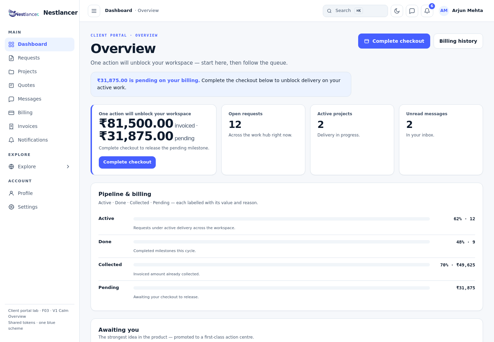

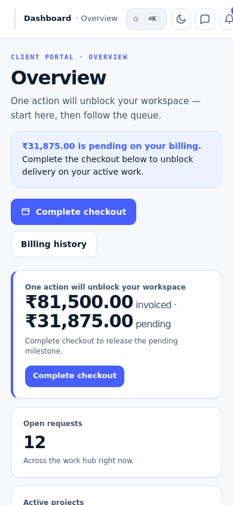

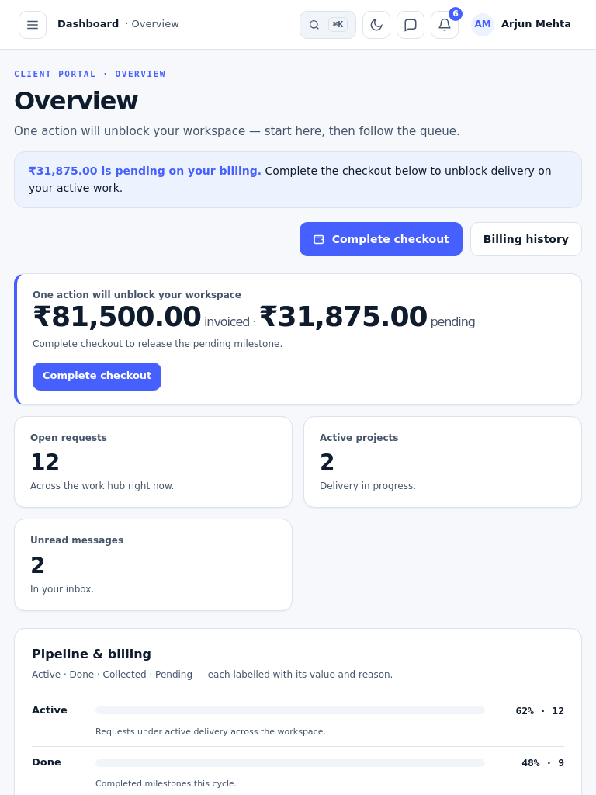

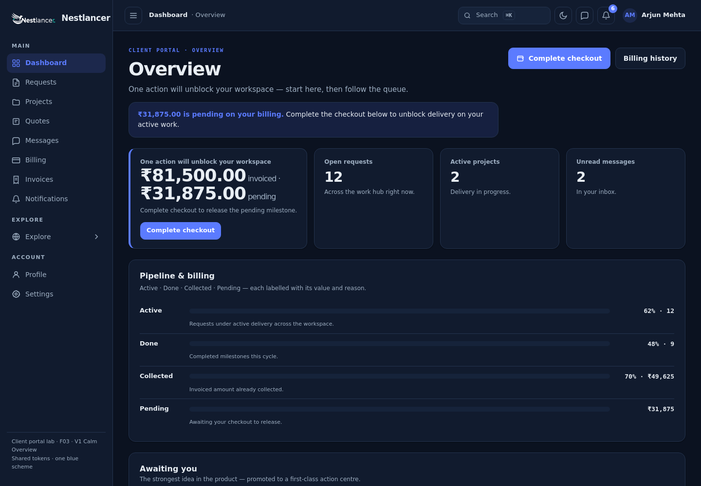


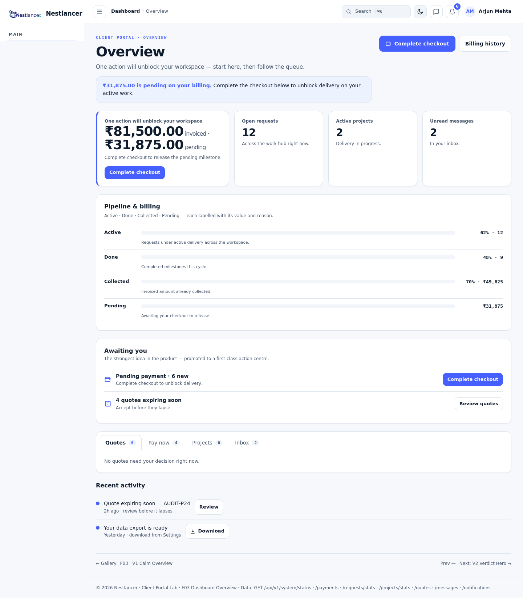
#1 · V2 · Verdict Hero — 73.8
Source (unmodified): client-portal-lab/families/F03-dashboard-overview/V2/index.html
· Raw evidence: review-evidence/raw/F03-V2-raw.json, review-evidence/raw/F03-probe.json, review-evidence/raw/F03-probe2.json
Task clarity (4/4): Split hero puts the verdict sentence (₹31,875.00 is pending... Complete checkout to unblock delivery), invoiced/pending amounts, both CTAs, and the full Awaiting-you queue (Pay/Review/Open) in the first screen - the only version where status, next step and queue are all visible without scrolling.
Usability (3/4): Tab switch to Pay now works (aria-selected=true, correct panel), primary and demo controls give the honest lab toast, palette opens with focus in the input and Escape returns focus to the trigger, theme toggle works. Friction: mobile menu affordance is a 2px sliver.
Visual craft (3/4): Polished, coherent hero/rail composition; faults are small and enumerable: Profile and Settings sidebar icons are blank (sprite lacks #i-user/#i-settings), the invoiced-pending separator renders as a heavy black square at display size, pipeline fills render 0x0, brand clip (shared shell).
Responsive (2/4): Same shared 390px topbar overflow (64px h-scroll, bell clipped, avatar at 454px, menu button 2px); but hero, queue actions and vitals restack well and Pay/Review are visible early on mobile. Desktop/tablet clean.
Accessibility (2/4): Correct H1, skip link, 15/15 visible-focus stops, working tab semantics and palette focus management; held back by shared 4.33:1 brand-text contrast (2 nodes; 4 in dark), the 2px-wide mobile menu target, and 19px-high gallery/prev/next text links.
Integrity (3/4): All frozen sections present (verdict, vitals, pipeline, awaiting, 4-tab workbench with empty states, activity) with correct money formatting and honest demo toasts. Gaps: pipeline bars visually imply 0% beside correct % text, sub-copy reads 'value + % + reason'.
Interaction / task results (V2)
| Task | Result |
|---|---|
| T1_first_screen | pass |
| T2_keyboard | pass (15 stops, focus visible) |
| T3_core_tab_switch | pass |
| T3b_primary_action | pass (honest demo toast) |
| T4_theme | pass |
| T5_demo_honesty | pass |
| T6_mobile | partial (nav opens; button 2px, header clipped) |
| T7_axe | color-contrast x2 (dark x4) |
Issues (5)
- major
F03-COM-01Mobile topbar overflow / 2px menu button (shared shell) (raw/F03-probe.json) - major
F03-COM-02Pipeline fills 0x0 (shared pattern) (probe .fill) - minor
F03-V2-I3Sidebar Profile/Settings icons blank - sprite missing i-user/i-settings (desktop-light-top.png; symbol scan) - minor
F03-COM-03Brand contrast 4.33:1 (axe) - minor
F03-V2-I5Separator glyph renders as black square between invoiced/pending (desktop-light-top.png)

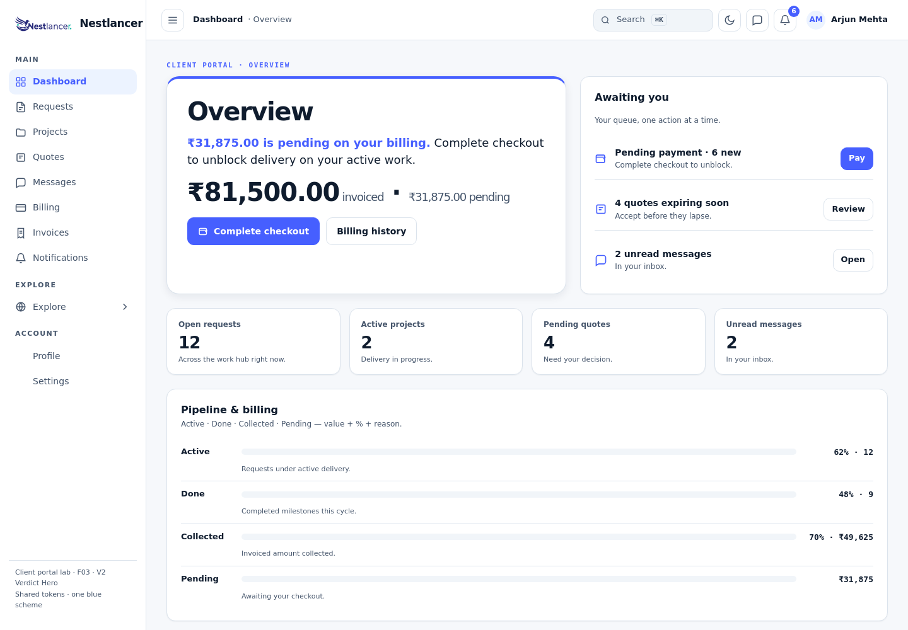

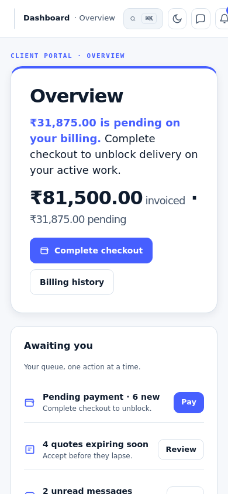

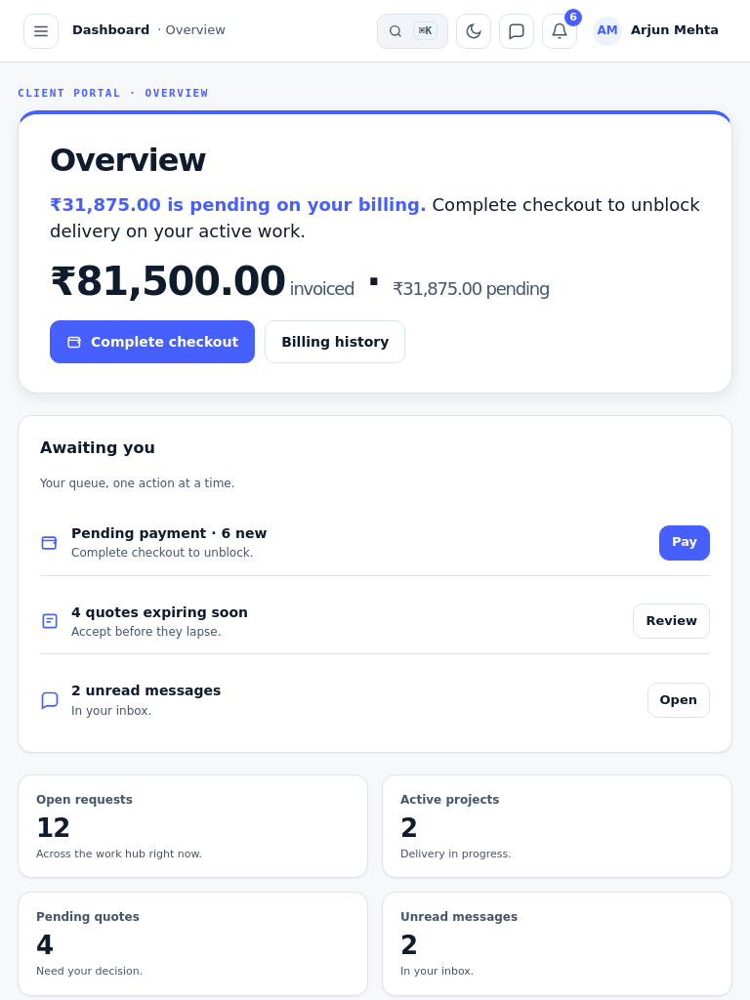

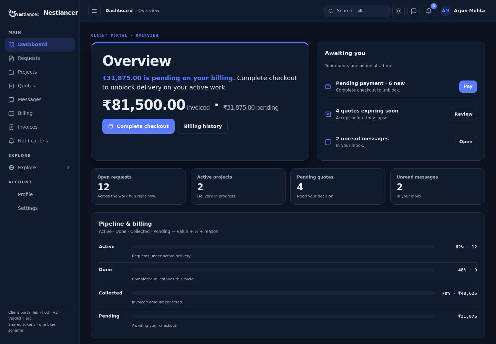


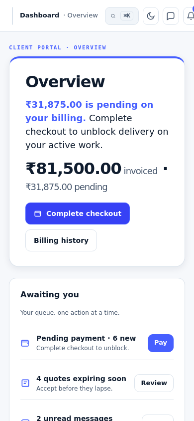

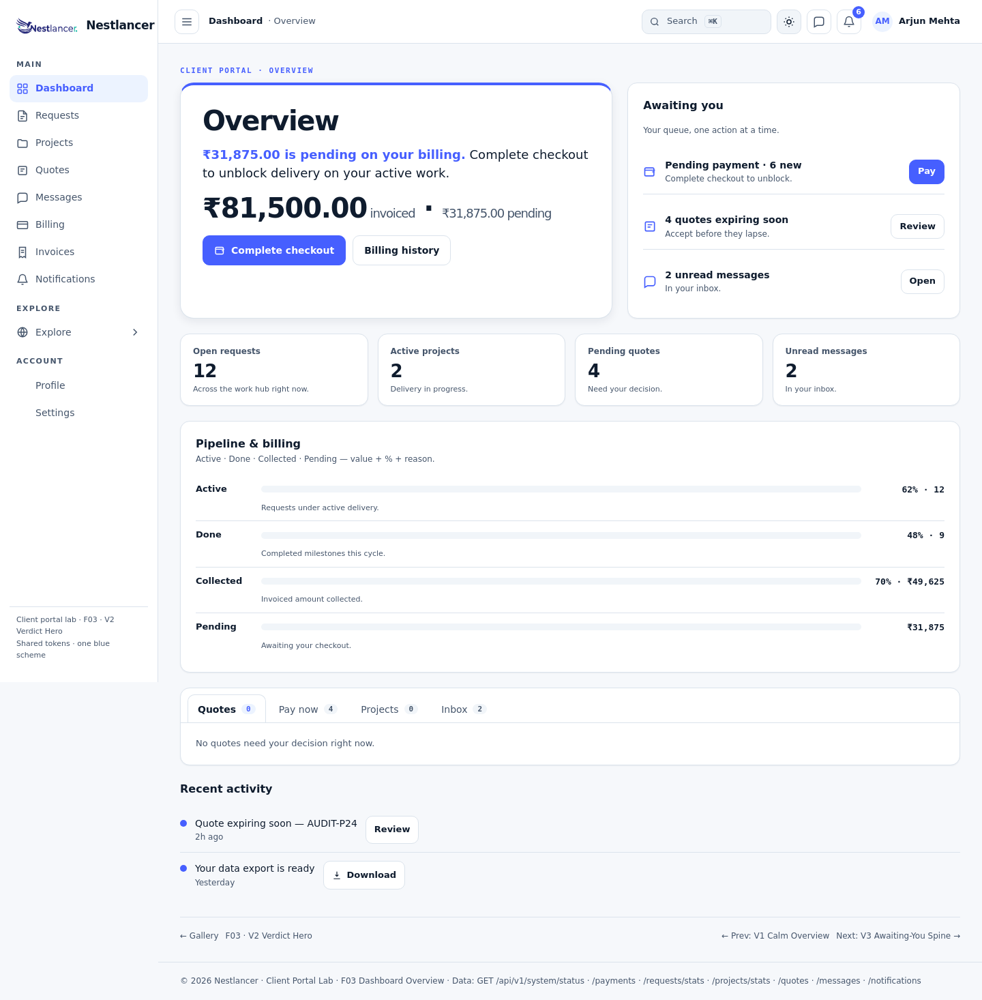
#2 · V3 · Awaiting-You Spine — 65.0
Source (unmodified): client-portal-lab/families/F03-dashboard-overview/V3/index.html
· Raw evidence: review-evidence/raw/F03-V3-raw.json, review-evidence/raw/F03-probe.json, review-evidence/raw/F03-probe2.json
Task clarity (3/4): Queue-first: H1-sized 'Awaiting you' with '6 items need your attention - start with the payment' and a Pay button make the next action unmissable; but the page no longer calls itself Overview (H1 replaced), and the same ₹31,875 payment is offered again as Complete checkout in the workbench below.
Usability (3/4): Primary/demo actions give honest toasts, palette and theme work with correct focus handling; there is no tab pattern - queues are stacked, so scanning is scroll-driven, and the Quotes queue has no workbench representation (only the expiring-quotes rail row). Mobile nav opens.
Visual craft (3/4): Clean sticky rail plus live column, consistent spacing and complete icons; pipeline fills 0x0 and brand clip as shared. The rail card ends mid-viewport, leaving the left column noticeably emptier than the right at first load.
Responsive (2/4): Best mobile queue (Pay/Review/Open/Download all in the first screen) but vitals are pushed below the whole queue, and the shared topbar overflow/2px menu button applies. Desktop/tablet clean.
Accessibility (2/4): Keyboard, focus and palette behaviour strong; H1 names the queue rather than the page topic, shared 4.33:1 contrast (2 nodes; 5 in dark), 2px menu target and 19px footer links.
Integrity (2/4): Deviates from frozen spec: H1 'Overview' replaced, 4-tab workbench replaced by a mixed stack despite copy claiming 'One queue at a time', Quotes 0 empty state absent, and one pending amount presented as two different actions (Pay vs Complete checkout). Demo toasts honest.
Interaction / task results (V3)
| Task | Result |
|---|---|
| T1_first_screen | pass (queue-first) |
| T2_keyboard | pass |
| T3_core_tab_switch | not applicable (no tab pattern by design) |
| T3b_primary_action | pass (honest demo toast) |
| T4_theme | pass |
| T5_demo_honesty | pass |
| T6_mobile | partial (queue excellent; header clipped) |
| T7_axe | color-contrast x2 (dark x5) |
Issues (5)
- major
F03-V3-I1H1/frozen page name replaced by 'Awaiting you' (probe headings) - major
F03-V3-I2Same ₹31,875 shown as both Pay (rail) and Complete checkout (workbench) (desktop-light-top.png) - major
F03-COM-01Mobile topbar overflow / 2px menu button (probe) - major
F03-COM-02Pipeline fills 0x0 (probe) - minor
F03-V3-I5'One queue at a time' copy contradicts stacked queues; Quotes empty state missing (desktop-light-top.png)

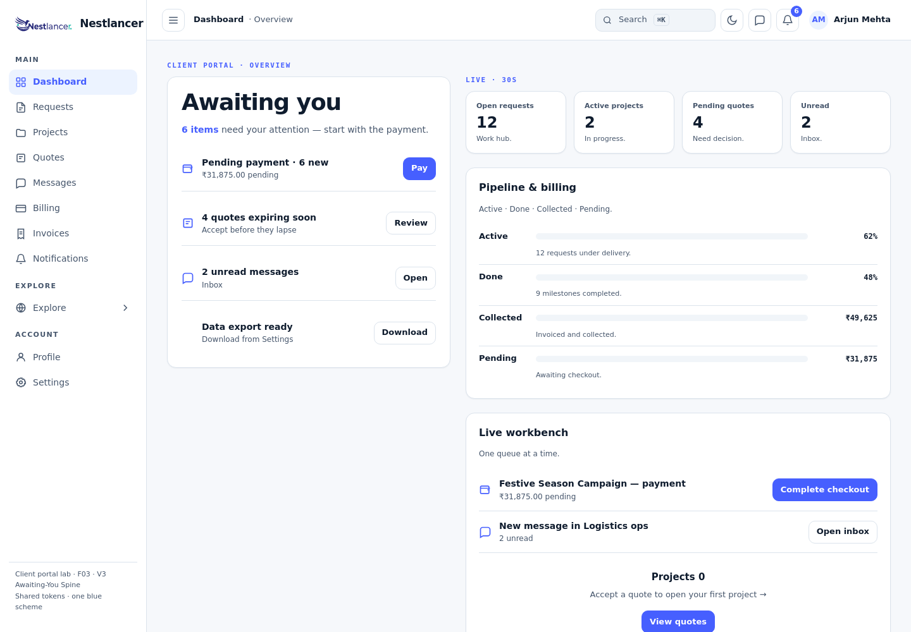

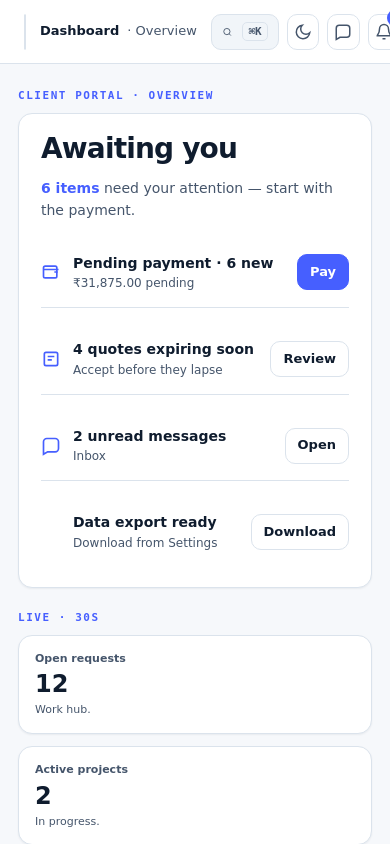

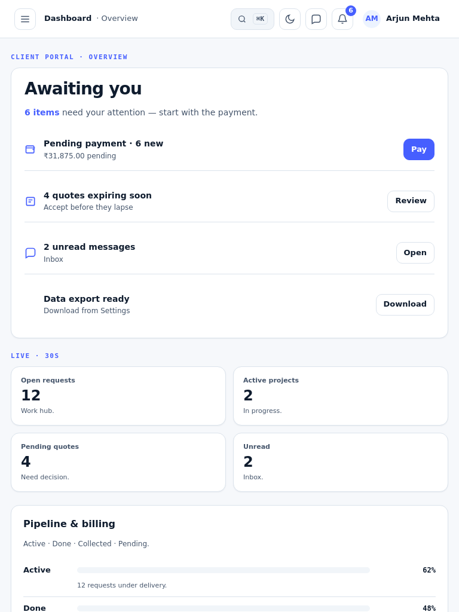

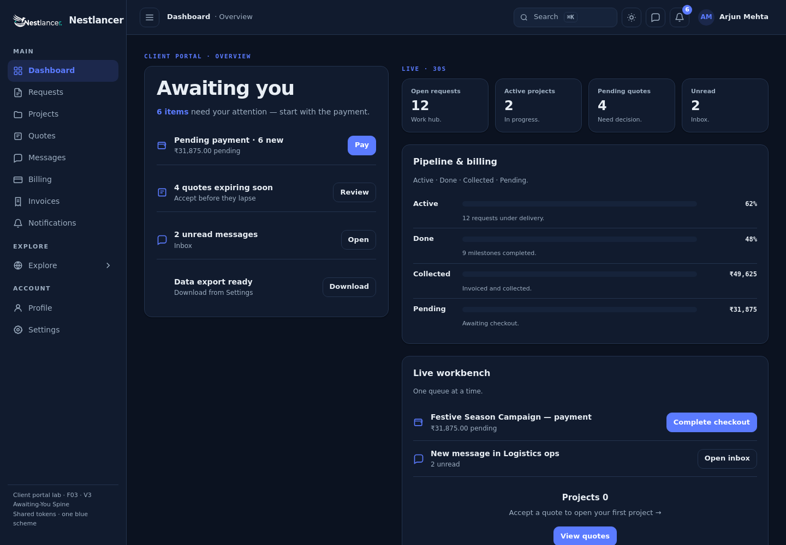

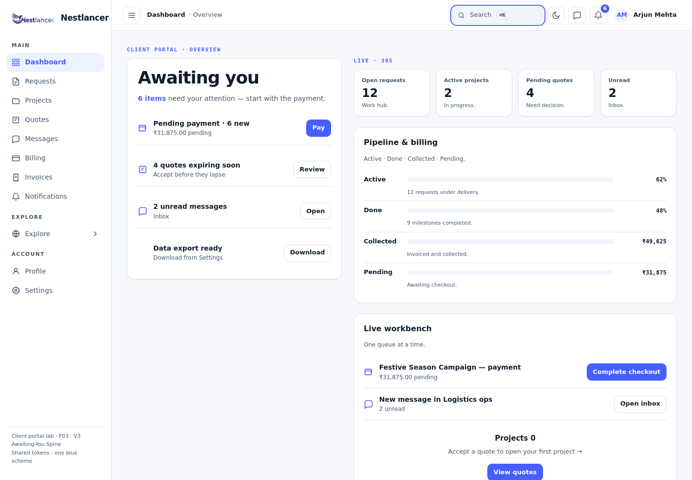


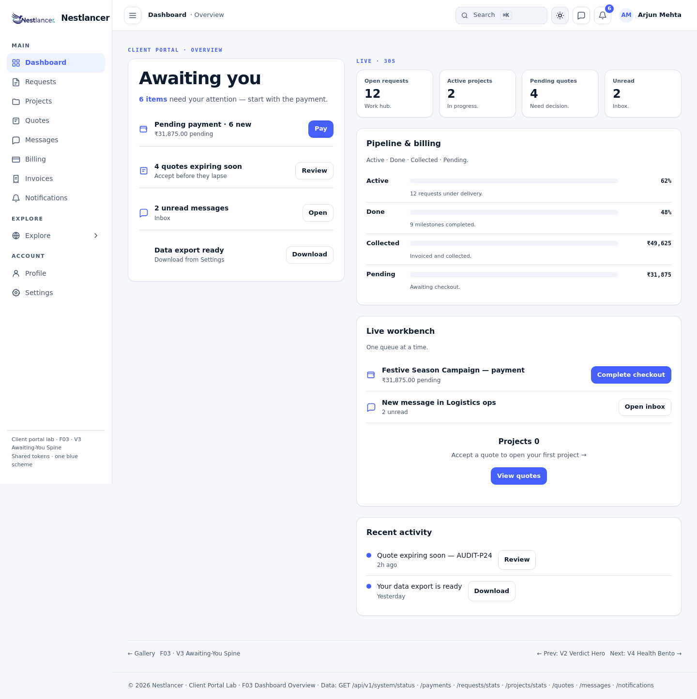
#4 · V4 · Health Bento — 56.2
Source (unmodified): client-portal-lab/families/F03-dashboard-overview/V4/index.html
· Raw evidence: review-evidence/raw/F03-V4-raw.json, review-evidence/raw/F03-probe.json, review-evidence/raw/F03-probe2.json
Task clarity (3/4): Breadcrumb/eyebrow still identify Overview, the hero tile leads with 'One action will unblock your workspace' + Complete checkout, and Awaiting you (Pay) is in the first screen - so purpose/next step are recoverable, but there is no Overview headline and no verdict sentence; the equal-weight Workspace health tile competes for attention. (Pairwise re-check note: missing H1 is penalised under Accessibility/Integrity, not double-counted here.)
Usability (2/4): What exists works (primary/demo toasts, palette focus, theme, mobile nav), but there is no workbench: Pay-now items, quote/message queues and empty states cannot be inspected from this dashboard at all - only counts and two Awaiting rows.
Visual craft (2/4): Tidy bento grid, but hero and Workspace-health tiles are mostly empty space, pipeline bars shrink to stubs (fills 0x0) with truncated why-lines ('Collected.'), the invoiced/pending separator is the same black square, and the page ends after Recent activity leaving the lower half of a 1000px viewport void.
Responsive (2/4): Stacks cleanly with no version-specific clipping, but mobile KPI cards are full-width and mostly empty, making the queue a long scroll; shared topbar overflow/2px menu applies.
Accessibility (2/4): No H1 anywhere (headings start at sidebar H2s) - a structural barrier for heading navigation; otherwise skip link, visible focus and palette behaviour are strong, with shared 4.33:1 contrast (2 nodes; 4 dark) and small mobile targets.
Integrity (2/4): Money formatting drops frozen paise (₹81,500 / ₹31,875 instead of .00), invents client-facing jargon ('FLEET HEALTH', 'Fleet status at a glance (A9)') with an internal coverage code in the UI, and omits the live workbench/empty-state content entirely.
Interaction / task results (V4)
| Task | Result |
|---|---|
| T1_first_screen | partial (no Overview headline) |
| T2_keyboard | pass |
| T3_core_tab_switch | not applicable (no workbench) |
| T3b_primary_action | pass (honest demo toast) |
| T4_theme | pass |
| T5_demo_honesty | pass |
| T6_mobile | partial (long empty cards; header clipped) |
| T7_axe | color-contrast x2 (dark x4) |
Issues (5)
- major
F03-V4-I1No H1 element on the page (probe headings; grep <h1 =0) - major
F03-V4-I2Live workbench queues/empty states omitted (section-presence scan) - minor
F03-V4-I3Internal jargon in UI: FLEET HEALTH / (A9); money drops .00 (desktop-light-top.png) - major
F03-COM-01Mobile topbar overflow / 2px menu button (probe) - major
F03-COM-02Pipeline fills 0x0 (probe)

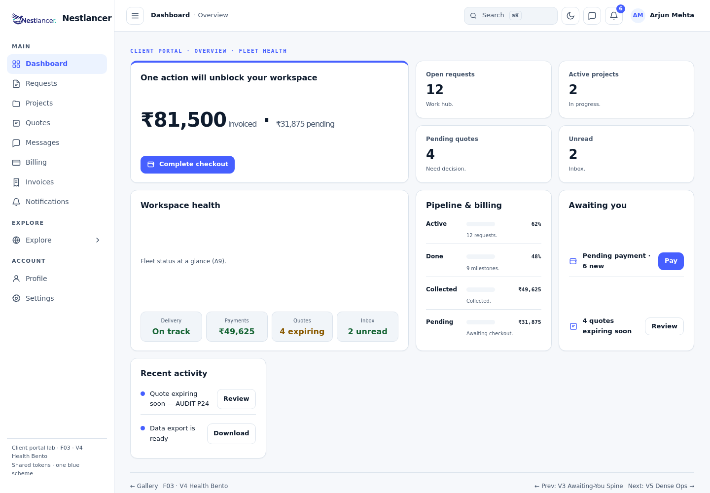

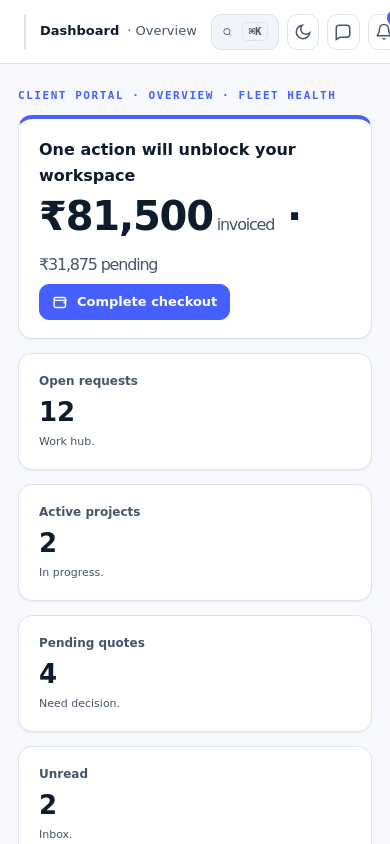

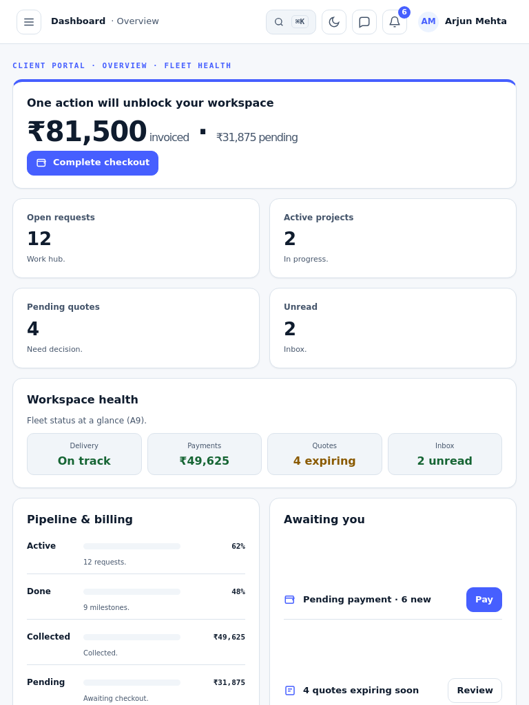

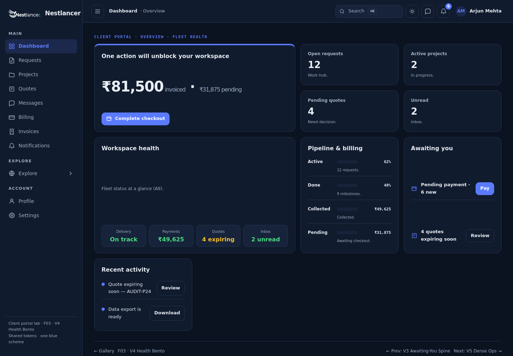

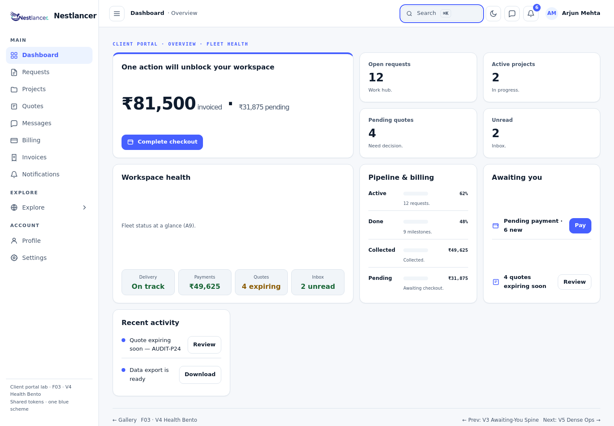


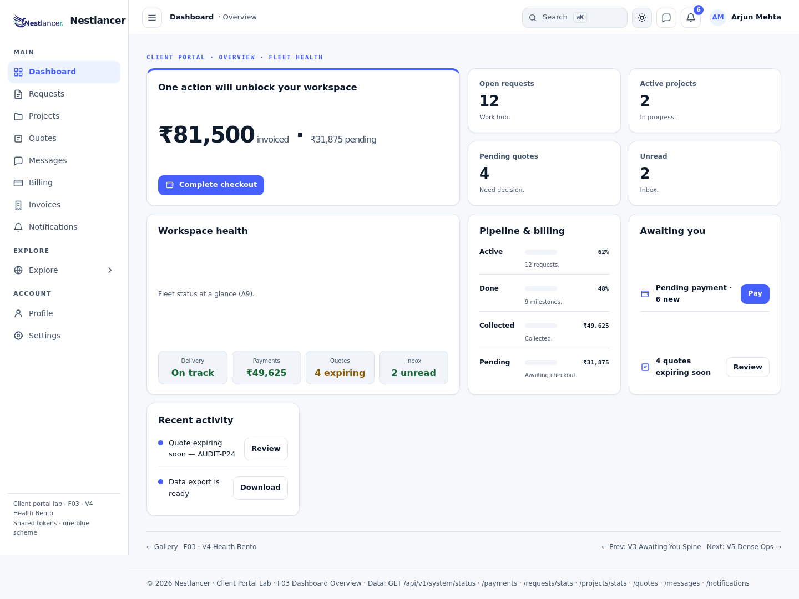
#3 · V5 · Dense Ops Workbench — 58.8
Source (unmodified): client-portal-lab/families/F03-dashboard-overview/V5/index.html
· Raw evidence: review-evidence/raw/F03-V5-raw.json, review-evidence/raw/F03-probe.json, review-evidence/raw/F03-probe2.json
Cap considered, not applied: Mobile table truncation considered for cap; not applied - the primary Complete checkout action and amounts remain reachable at 390px (status pills are clipped, not hidden entirely), and the page is fully usable on desktop. Recorded as responsive=1 instead.
Task clarity (3/4): For a repeat user this is the fastest scan: Overview + pending one-liner, 5-KPI strip, and the Pay now table open by default with Complete checkout on the pending row. First-time context is thin - no verdict explanation, awaiting or pipeline context.
Usability (3/4): Tabs work (Pay now panel correct), primary/demo toasts honest, palette/theme correct; the tab-led table is efficient on desktop. Sort/chips claimed in the concept were not separately exercised in this pilot (not observed, not scored as a pass).
Visual craft (3/4): Clean dense table with text+colour status pills and consistent type; let down by the page ending at ~45% of the viewport (reads unfinished), a dangling small '.00' after the KPI amount, and an API-path footer line.
Responsive (1/4): Major clipping at 390px: the workbench table's STATUS column and pills are cut off at the card edge ('STAT...', 'Pen...', 'Not...'), the Pay now tab wraps, and the documented mobile card-fallback does not occur - on top of the shared topbar overflow. Desktop/tablet clean.
Accessibility (2/4): H1 present, highest axe pass count (28), tab semantics present; shared barriers remain - 4.33:1 brand contrast (2 nodes; 3 dark), 2px mobile menu target, 19px footer links, and mobile status text truncation also harms low-vision mobile users.
Integrity (1/4): Largest spec deviation: frozen Pipeline & billing, Awaiting you and Recent activity sections are absent entirely; 'Pay now 4' shows only 2 rows with no pagination note; footer exposes raw API endpoints ('Data: GET /api/v1/...') to clients. Amounts shown are correct.
Interaction / task results (V5)
| Task | Result |
|---|---|
| T1_first_screen | pass (desktop) |
| T2_keyboard | pass |
| T3_core_tab_switch | pass |
| T3b_primary_action | pass (honest demo toast) |
| T4_theme | pass |
| T5_demo_honesty | pass |
| T6_mobile | fail (table status clipped) |
| T7_axe | color-contrast x2 (dark x3); 28 passes |
Issues (5)
- major
F03-V5-I1Frozen Pipeline/Awaiting/Activity sections omitted (section-presence scan; fullpage 1000px) - major
F03-V5-I2Mobile table clips STATUS column/pills; no card fallback (mobile-light-top.png) - minor
F03-V5-I3Pay now count 4 vs 2 rows, no pagination note (desktop-light-top.png) - major
F03-COM-01Mobile topbar overflow / 2px menu button (probe) - minor
F03-V5-I5Footer lists raw API endpoints (desktop-light-top.png)


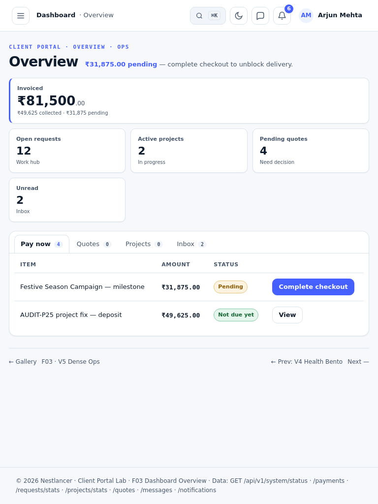

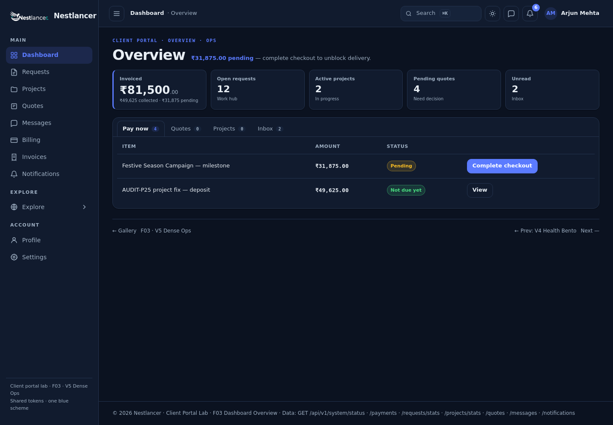

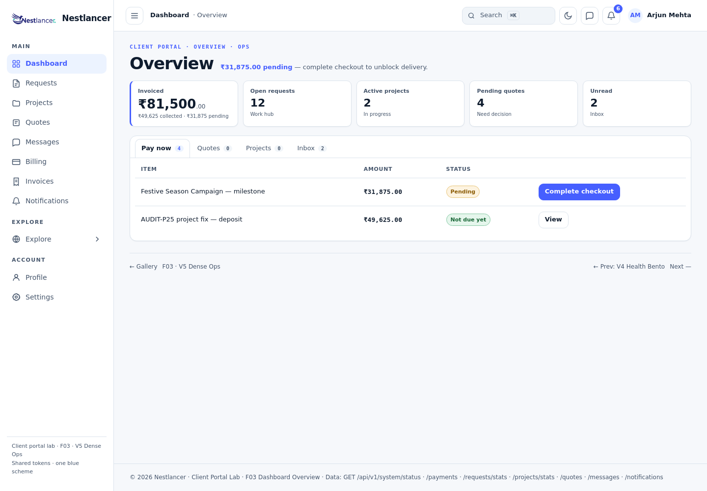

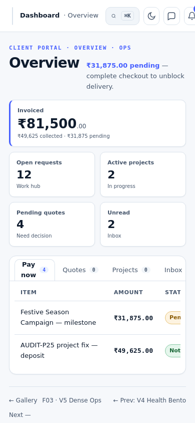

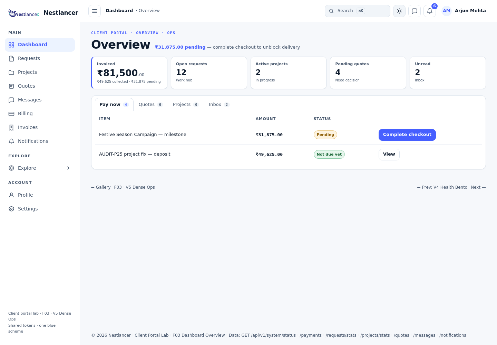
Blind comparison boards
Seeded labels A–E; the screenshots contain in-page version identifiers, so true blinding was incomplete. Mapping (review-evidence/raw/blind-mapping.json): A=V2 · B=V1 · C=V3 · D=V4 · E=V5.
One AI evaluator generated the board and mapping; board notes above were recorded in the session transcript before the mapping file was opened. This is a bias-reduction aid, not true experimental blinding.

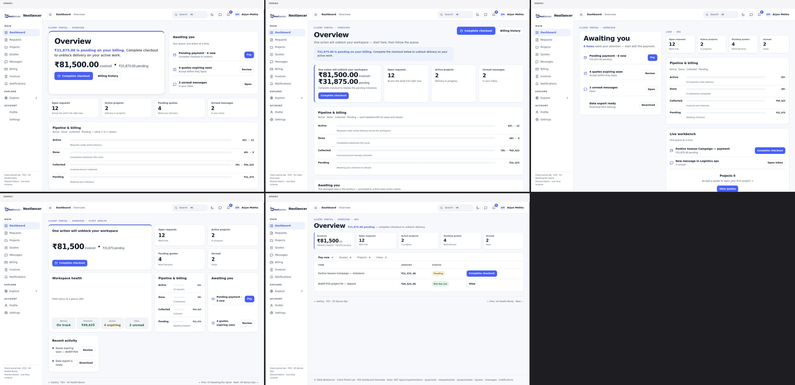

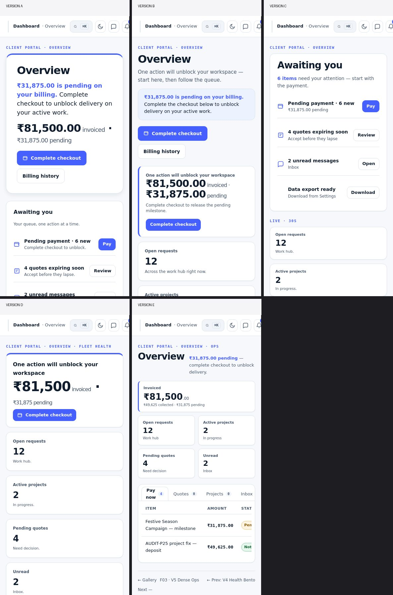
Pairwise consistency check (one evaluator, not votes)
| Pair | Better for family task | Reason |
|---|---|---|
| V1 vs V2 | V2 | Working tabs/palette/theme + queue in first screen vs fully dead script |
| V1 vs V3 | V3 | Working queue actions vs inert controls |
| V1 vs V4 | V4 | V4's actions/palette work; V1's complete content cannot be acted on. This pair triggered a re-check of V4 task clarity (see V4 evidence): shell labels give it purpose/action, H1 absence scored under accessibility |
| V1 vs V5 | V5 | Working tab table vs dead tabs |
| V2 vs V3 | V2 | Frozen workbench tabs + hero verdict retained vs renamed H1 and duplicated payment |
| V2 vs V4 | V2 | Full queues/workbench and page identity vs missing H1/workbench |
| V2 vs V5 | V2 | Complete context (pipeline/activity) and intact mobile actions vs omitted sections + clipped mobile table |
| V3 vs V4 | V3 | Queues inspectable and H1 present vs no workbench/H1 |
| V3 vs V5 | V3 | Across viewports V3's mobile queue stays intact; V5's core table clips on mobile |
| V4 vs V5 | V5 | Actionable tabbed queues on desktop vs counts-only dashboard (narrow margin, consistent with 58.8 vs 56.2) |
One evaluator's 10-pair consistency check (S4.2), not human votes; no Bradley-Terry/Elo applied. All 10 agree with the rubric order; the V1-V4 pair prompted the documented V4 task-clarity re-check.
Coverage, limitations, change log
Persona coverage (no votes): Coverage relevance only: shared mobile header/menu defect is most relevant to phone one-handed and motor-access profiles; 4.33:1 contrast to low-vision profiles; V4 missing H1 and V1 inert tab pattern to keyboard/screen-reader profiles; V3 duplicated payment to cognitive-access and first-time profiles; V5 context-thin density to first-time profiles. No persona preferred or voted.
Task script: Generic T1-T7 in manifest + F03 core: switch workbench tab to Pay now (where a tab pattern exists), invoke Complete checkout and a data-demo nav item (honest feedback), open Cmd-K palette (focus/Escape), theme toggle, mobile menu open, axe light/dark/mobile.
- V4 task_clarity set to 3 (not 2) at first-pass after the V1-V4 pairwise re-check: visual purpose/action are supplied by breadcrumb/eyebrow/hero; missing H1 is scored under accessibility+integrity to avoid triple-counting one defect. No scores were changed after unblinding or after any total was computed for another version. Prior DECISIONS/DELIVERY winners remain unread.
Environment: Chromium 131.0.6778.33 (HeadlessChrome, Playwright bundled build chromium-1148) · Playwright 1.49.1 (pinned in review-evidence/tooling/package.json)
· axe-core 4.10.2 (pinned) · NOT cross-machine pixel-reproducible: no Docker in sandbox; pinned Playwright/Chromium used consistently for every page in this run.
Full record: review-evidence/review-manifest.json; machine data: review-evidence/scores.json.